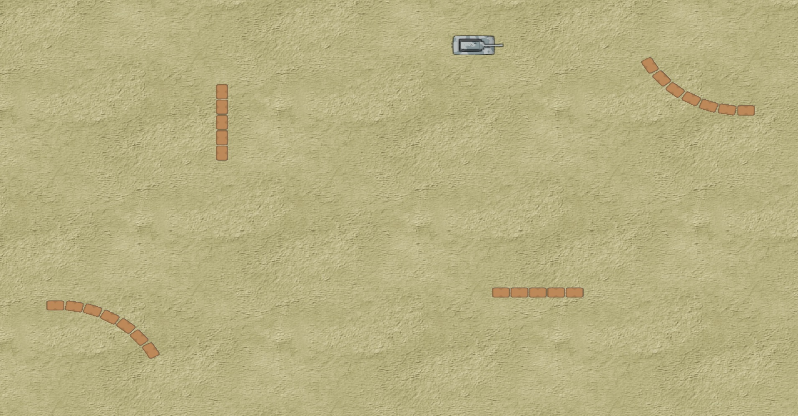

To be completed by: Week 9 (Fri 9/11)
Learning Outcomes:
Continue with the sample Visual Studio solution 'SFML_Playground' from lab 4.
5.1 Project setup
We are going to add a couple of sections of walls to add some interest to the level, when finished it will look like this:

It will obviously be necessary to check for collisions between the tank and the walls which is the focus of this lab.
Download the necessary files for this lab from here. Unzip the file and copy the updated .yaml file into your resources\levels folder. The yaml file defines additional walls as obstacles.
Add the files CollisionDetector.h, OrientedBoundingBox.h and their respective .cpp files to your project.
The OrientedBoundingBox class is adapted slightly from the SFML wiki here. It provides an implementation of the Seperating Axis Theorem which you may learn about in Graphics next year.
5.2 Generating the walls
The first step is to get the level data for the Walls from our Level object - remember, the Game class has a member variable m_level which represents our level data. Note we don't need to make any changes to our LevelLoader as it will happily load up the additional walls we have defined in the yaml file. Add a new private member function to Game.h as follows:
/// <summary>
/// @brief Creates the wall sprites and loads them into a vector.
/// Note that sf::Sprite is considered a light weight class, so
/// storing copies (instead of pointers to sf::Sprite) in std::vector is acceptable.
/// </summary>
void generateWalls();
We will need to create a sf::Sprite for each wall, and because there are multiple walls, we need to store the sprites in a container. Add the following new member variable:
// Wall sprites
std::vector<sf::Sprite> m_wallSprites;
This defines a std::vector of type sf::Sprite. The vector of course will hold nothing yet, so we need to write the function generateWalls() next to fill it.
In Game.cpp, define the new member function:
////////////////////////////////////////////////////////////
void Game::generateWalls()
{
sf::IntRect wallRect(2, 129, 33, 23);
// Create the Walls
for (ObstacleData const & obstacle : m_level.m_obstacles)
{
sf::Sprite sprite;
sprite.setTexture(m_texture);
sprite.setTextureRect(wallRect);
sprite.setOrigin(wallRect.width / 2.0, wallRect.height / 2.0);
sprite.setPosition(obstacle.m_position);
sprite.setRotation(obstacle.m_rotation);
m_wallSprites.push_back(sprite);
}
}
The sprites for each wall are simply appended to the vector.
At the end of the Game constructor function, add a line to call the new member function:
generateWalls();
Exercise 1: Build and run the project. Note the walls do not appear. Modify the Game::render() function so the walls get drawn. Hint: Think about what we have just done in the generateWalls() function.
5.3 Collision detection between tank and walls
Now the walls are visible, the next step is to add collision detection between the tank and walls. The tank will perform it's own collision checking. Therefore, we need to tell the tank where the walls are. Refactor the Tank constructor to take a reference to the container of wall sprites (note that we try to keep our comments updated to relect the changes):
/// <summary>
/// @brief Constructor that stores drawable state (texture, sprite) for the tank.
/// Stores references to the texture and container of wall sprites.
/// Creates sprites for the tank base and turret from the supplied texture.
/// </summary>
/// <param name="texture">A reference to the sprite sheet texture</param>
///< param name="texture">A reference to the container of wall sprites</param>
Tank(sf::Texture const & texture, std::vector<sf::Sprite> & wallSprites);
Next, add a new member variable to keep a reference to the wall sprite container in Tank.h:
// A reference to the container of wall sprites.
std::vector<sf::Sprite> & m_wallSprites;
The constructor definition now looks like:
////////////////////////////////////////////////////////////
Tank::Tank(sf::Texture const & texture, std::vector<sf::Sprite> & wallSprites)
: m_texture(texture)
, m_wallSprites(wallSprites)
{
// Initialises the tank base and turret sprites.
initSprites();
}
Don't forget to change the call to the tank constructor function in Game.cpp - you will need to pass in the vector of wall sprites.
We now require a new member function in class Tank to check for collisions betweeen the tank and the walls:
/// <summary>
/// @brief Checks for collisions between the tank and the walls.
///
/// </summary>
/// <returns>True if collision detected between tank and wall.</returns>
bool checkWallCollision();
And the implementation looks like this:
////////////////////////////////////////////////////////////
bool Tank::checkWallCollision()
{
for (sf::Sprite const & sprite : m_wallSprites)
{
// Checks if either the tank base or turret has collided with the current wall sprite.
if (CollisionDetector::collision(m_turret, sprite) ||
CollisionDetector::collision(m_tankBase, sprite))
{
return true;
}
}
return false;
}
CollisionDetector::collision() is a static method that takes two sprites and returns true if their bounding boxes intersect. Note how we check both the tank base AND the turret for wall collisions. Note: Don't forget to #include "CollisionDetector.h" inside the header file for class Tank.
Build and run the project. Note that the tank still runs through the walls as our Tank::checkWallCollision() function is not called anywhere.
Exercise 2: In Tank::update() we want to call our collision check function. At the end of update(), add the following:
if (checkWallCollision())
{
deflect();
}
There are several collision scenarios we need to take into account:
(1) The tank is moving in a straight line and collides with a wall. In this case we bounce the tank back in the direction of travel and disable turret rotations while this is happening.
(2) The tank is stopped, but it rotates into a wall, so we bounce the tank base in the opposite direction (away from the wall).
(3) Again the tank is not moving, but the turret rotates and collides with an adjacent wall. In this case, we want to deflect the turret back (slightly) in the direction it was moving from. These scenarios are captured below in our new member function deflect() which you can add to Tank.h:
/// <summary>
/// @brief Stops the tank if moving and applies a small increase in speed in the opposite direction of travel.
/// If the tank speed is currently 0, the rotation is set to a value that is less than the previous rotation value
/// (scenario: tank is stopped and rotates into a wall, so it gets rotated towards the opposite direction).
/// If the tank is moving, further rotations are disabled and the previous tank position is restored.
/// The tank speed is adjusted so that it will travel slowly in the opposite direction. The tank rotation
/// is also adjusted as above if necessary (scenario: tank is both moving and rotating, upon wall collision it's
/// speed is reversed but with a smaller magnitude, while it is rotated in the opposite direction of it's
/// pre-collision rotation).
/// </summary>
void deflect();
Here's the implementation for Tank::deflect()
void Tank::deflect()
{
// In case tank was rotating.
adjustRotation();
// If tank was moving.
if (m_speed != 0)
{
// Temporarily disable turret rotations on collision.
m_enableRotation = false;
// Back up to position in previous frame.
m_tankBase.setPosition(m_previousPosition);
// Apply small force in opposite direction of travel.
if (m_previousSpeed < 0)
{
m_speed = 8;
}
else
{
m_speed = -8;
}
}
}
Firstly, you will need to add new member variables m_enableRotation, m_previousPosition and m_previousSpeed. Rotations should be enabled initially, but are disabled when there is a collision. Rotations should be re-enabled after a collision has been resolved (think about where this should happen).
The variable m_previousPosition should always be updated before the tank moves to a new position.
We will deal with m_previousSpeed shortly.
Next, add a new private member function for adjustRotation():
void adjustRotation();
with the following implementation:
////////////////////////////////////////////////////////////
void Tank::adjustRotation()
{
// If tank was rotating...
if (m_rotation != m_previousRotation)
{
// Work out which direction to rotate the tank base post-collision.
if (m_rotation > m_previousRotation)
{
m_rotation = m_previousRotation - 1;
}
else
{
m_rotation = m_previousRotation + 1;
}
}
// If turret was rotating while tank was moving
if (m_turretRotation != m_previousTurretRotation)
{
// Set the turret rotation back to it's pre-collision value.
m_turretRotation = m_previousTurretRotation;
}
}
The last two new member variable we need are m_previousRotation and m_previousTurretRotation to keep track of the previous tank base and turrent rotations respectively. Add these now.
Note that m_previousRotation should save the tank bases current rotation value before it gets updated. Where should this be done? (Likewise with m_previousTurretRotation).
Hint: Take a look at where we might capture the current tank base rotation before it gets updated:
////////////////////////////////////////////////////////////
void Tank::increaseRotation()
{
m_previousRotation = m_rotation; // NEW
m_rotation += 1;
if (m_rotation == 360.0)
{
m_rotation = 0;
}
}
Do the same now inside member function Tank::decreaseRotation(). Carry out the same procedure for the other member variables m_previousTurretRotation and m_previousSpeed.
Build and run the project - test all three possible collision scenarios. The results are not perfect but work reasonably well.